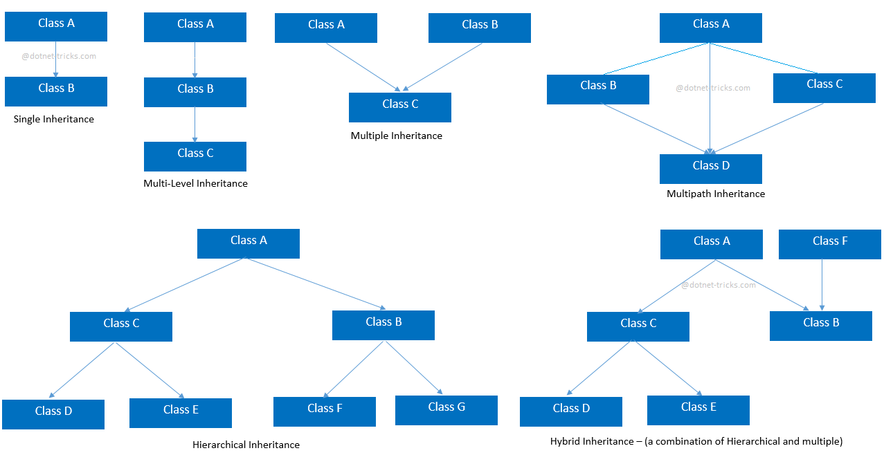

Inheritance¶
For instance, we are humans. We inherit certain properties from the class ‘Human’ such as the ability to speak, breathe, eat, drink, etc.
We can also take the example of cars.
The class ‘Car’ inherits its properties from the class ‘Automobiles’ which inherits some of its properties from another class ‘Vehicles’.
Example¶
class Person:
def pname(self):
print("person")
class Employee(Person): #Employee class inherits person class
def ename(self):
print("employee")
y = Employee()
y.pname()
y.ename()
person
employee
Types of inheritance¶

Single inheritance¶
Single Inheritance: Single inheritance enables a derived class to inherit properties from a single parent class, thus enabling code reusability and the addition of new features to existing code.
class Parent:
def func1(self):
print("This function is in parent class.")
class Child(Parent):
def func2(self):
print("This function is in child class.")
object = Child()
object.func1()
object.func2()
This function is in parent class.
This function is in child class.
Multiple Inheritance¶
When a class can be derived from more than one base class this type of inheritance is called multiple inheritance. In multiple inheritance, all the features of the base classes are inherited into the derived class.
class Mother:
mothername = ""
def mother(self):
print(self.mothername)
class Father:
fathername = ""
def father(self):
print(self.fathername)
class Son(Mother, Father):
def parents(self):
print("Father :", self.fathername)
print("Mother :", self.mothername)
s1 = Son()
s1.fathername = "RAM"
s1.mothername = "SITA"
s1.parents()
Father : RAM
Mother : SITA
Multilevel Inheritance¶
In multilevel inheritance, features of the base class and the derived class are further inherited into the new derived class. This is similar to a relationship representing a child and grandfather.
class Mother:
mothername = ""
def mother(self):
print(self.mothername)
class Father(Mother):
fathername = ""
def father(self):
print(self.fathername)
class Son(Father):
def parents(self):
print("Father :", self.fathername)
print("Mother :", self.mothername)
s1 = Son()
s1.fathername = "RAM"
s1.mothername = "SITA"
s1.parents()
Father : RAM
Mother : SITA
Hierarchical Inheritance¶
When more than one derived classes are created from a single base this type of inheritance is called hierarchical inheritance. In this program, we have a parent (base) class and two child (derived) classes.
class Parent:
def func1(self):
print("This function is in parent class.")
class Child1(Parent):
def func2(self):
print("This function is in child 1.")
class Child2(Parent):
def func3(self):
print("This function is in child 2.")
object1 = Child1()
object2 = Child2()
object1.func1()
object1.func2()
object2.func1()
object2.func3()
This function is in parent class.
This function is in child 1.
This function is in parent class.
This function is in child 2.
Hybrid Inheritance¶
Inheritance consisting of multiple types of inheritance is called hybrid inheritance.
class School:
def func1(self):
print("This function is in school.")
class Student1(School):
def func2(self):
print("This function is in student 1. ")
class Student2(School):
def func3(self):
print("This function is in student 2.")
class Student3(Student1, School):
def func4(self):
print("This function is in student 3.")
object = Student3()
object.func1()
object.func2()
This function is in school.
This function is in student 1.